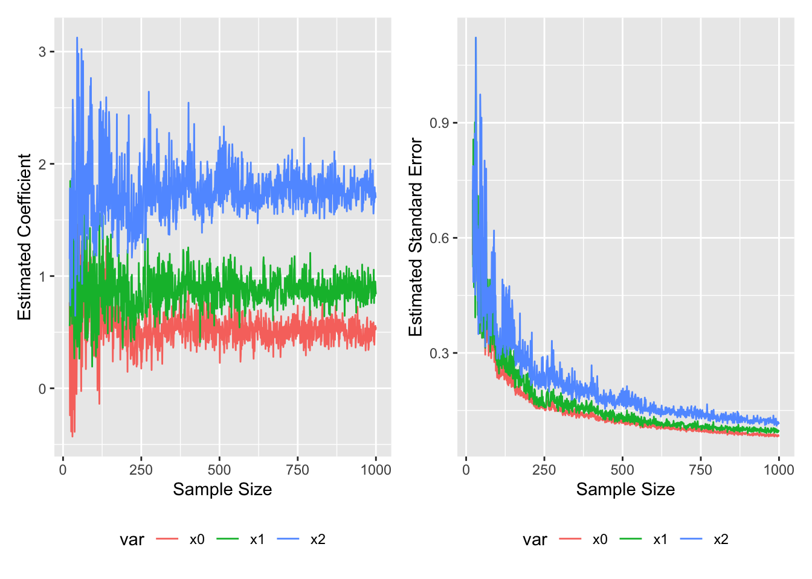

code
nsim <- function(i){
set.seed(12345)
X <- rnorm_multi(i, 3,
mu=c(0, 0, 0),
sd=1,
r = c(0.0, 0.0, 0.0),
varnames=c("x1", "x2", "e")) %>%
mutate(y = .5 + 1*x1 + 2*x2 + e) %>%
mutate(pry=plogis(y)) %>%
mutate(ybin=ifelse(pry>.5,1,0)) %>%
mutate(yb = rbinom(i,1,pry))
mod <- (glm(yb ~ x1 + x2, data=X , family=binomial(link="logit")))
# print(summary(mod))
coef <- numeric(0)
coef<-coef(summary(mod))[1:3,1]
se <- numeric(0)
se <-coef(summary(mod))[1:3,2]
n <- numeric(0)
n <- i
var = c("x0","x1","x2")
out <- data.frame(var, coef, se, n)
}
i <- seq(10,1000,1) #vector of i for "nsim" function
dfout <- map(i,nsim) |> list_rbind()
mleout <- dfout %>% filter(n< 300)
#plot
b <- ggplot(dfout%>% filter(n>20), aes(x=n, y=coef, color=var)) +
geom_line() +
labs(x="Sample Size", y="Estimated Coefficient")+
theme ( legend.position = "bottom",
legend.key = element_blank() )
se <- ggplot(dfout%>% filter(n>20), aes(x=n, y=se, color=var)) +
geom_line() +
labs(x="Sample Size", y="Estimated Standard Error")+
theme ( legend.position = "bottom",
legend.key = element_blank() )
b+se